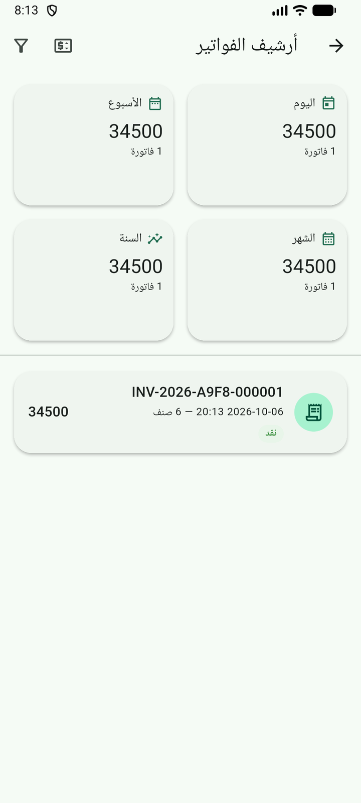
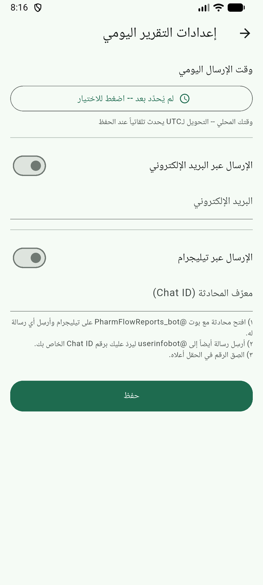

نظرة عامة
تتوفر التقارير في نظام الصيدلية على ثلاثة مستويات رئيسية:
1
تقارير يومية تلقائية: تُرسل كل يوم في الوقت الذي تحدده عبر البريد أو تيليغرام
2
تقارير على الطلب: عند الحاجة، من خلال الأرشيف وشاشات الإدارة
3
لوحة التحكم: عرض مؤشرات سريعة عن حالة الصيدلية
أرشيف الفواتير
أرشيف الفواتير يحتوي على كل الفواتير المكتملة في النظام. متاح للأدمن فقط (لأنه يحتوي على بيانات مبيعات مفصلة وحساسة).
الوصول لأرشيف الفواتير
1
من لوحة التحكم، اضغط أيقونة "أرشيف الفواتير" (📋 — متاح للأدمن فقط)
2
تظهر قائمة بجميع الفواتير مرتبة حسب التاريخ (الأحدث أولاً)
3
مرِّر للأسفل للوصول إلى الفواتير الأقدم
تفاصيل كل فاتورة في الأرشيف
📄 بطاقة الفاتورة تعرض:
- رقم الفاتورة (INV-YYYY-NNNNNN)
- تاريخ ووقت البيع
- اسم المستخدم المنفذ
- طريقة الدفع (نقدي، بطاقة، آجل)
- إجمالي الفاتورة
- الخصم (إن وجد)
- طرق الدفع: نقدي / بطاقة / آجل
دخول تفاصيل الفاتورة
1
اضغط على أي فاتورة لرؤية التفاصيل الكاملة
2
تظهر لك:
- رقم الفاتورة والتاريخ
- طريقة الدفع مع شارة "غير مدفوع" إذا كانت آجل
- قائمة جميع الأصناف مع السعر والكمية
- خانة "الإجمالي" في الأسفل
- زر "إرجاع" (للصيدلاني/الأدمن فقط)
- زر "طباعة الإيصال" (لجميع الأدوار)
زر "طباعة الإيصال" متاح للجميع — لا قيد — الكاشير يمكنه طباعة إيصال الفاتورة للعميل.
التقارير اليومية التلقائية
يتضمن النظام محركاً لإرسال تقارير يومية تلقائياً إلى:
- البريد الإلكتروني: إلى عنوان البريد المسجل للفرع
- تيليجرام: إلى محادثة أو قناة مخصصة
إعدادات إرسال التقرير
1
من لوحة التحكم، اضغط أيقونة "إعدادات التقرير" (⏰ — أدمن فقط)
2
تظهر شاشة الإعدادات التالية:
⏰ وقت الإرسال اليومي
1
اختر الوقت الذي تريد استلام التقرير فيه (مثال: 8:00 صباحاً)
2
الوقت يأتي مُحوَّلاً إلى UTC داخلياً لتقارير متسقة عبر المناطق الزمنية
3
إذا لم يُضبَط وقت، التقرير لا يُرسل تلقائياً
📧 قناة البريد الإلكتروني
1
عند التفعيل، أدخل عنوان البريد الإلكتروني للفرع
2
يُحفظ هذا العنوان ضمن إعدادات الفرع
البريد يجب أن يكون عنواناً صحيحاً — التقرير يكون ملف PDF مرفق.
📱 قناة تيليجرام
1
عند التفعيل، أدخل chat_id الخاص بالفرع
2
البوت المشترك (PharmFlow Bot) يرسل للـchat_id المحدد
ليست هناك حاجة لتوكن — التوكن سري على السيرفر فقط. chat_id هو مفتاح التمييز بين الفروع.
حفظ الإعدادات
1
اضغط "حفظ" في الأسفل
2
الإعدادات تُحفظ محلياً وفي السحابة (إذا كان متصلاً)
3
رسالة نجاح: "تم حفظ الإعدادات"
الإعدادات محفوظة حتى لو لم يكن هناك اتصال — ولكن إرسال التقرير الفعلي يحتاج اتصال بالإنترنت.
ملاحظة هامة: التقرير اليومي لا يُرسل إلا إذا تم تعيين وقت الإرسال وتفعيل واحدة على الأقل من القناتين.
ما يحتويه التقرير اليومي؟
عندما يُرسل التقرير اليومي، يحتوي على ملخص للمبيعات اليوم. المثال التالي توضيحي للشكل العام فقط؛ الأرقام وأسماء المنتجات فيه غير حقيقية:
═════════════════════════════════════
PHARMACY DAILY REPORT
═════════════════════════════════════
الصيدلية: [اسم الصيدلية]
التاريخ: 14 سبتمبر 2026
الفرع: [اسم الفرع]
─────────────────────────────────────
📊 ملخص المبيعات:
├─ إجمالي الفواتير: 47 فاتورة
├─ إجمالي المبيعات: 12,450,000 د.ع
├─ متوسط الفاتورة: 264,893 د.ع
├─ أعلى فاتورة: 1,850,000 د.ع
├─ الخصم اليومي: 320,000 د.ع
└─ المبيعات الصافية: 12,130,000 د.ع
💳 طرق الدفع:
├─ نقدي: 32 فاتورة (68.1%)
├─ بطاقة: 12 فاتورة (25.5%)
└─ آجل: 3 فواتير (6.4%)
📦 أفضل 5 منتجات:
1. باراسيتامول 500مغ — 89 وحدة
2. فيتامين د 400 وحدة — 67 وحدة
3. أموكسيسيلين 500مغ — 54 وحدة
4. إيبوبروفين 400مغ — 43 وحدة
5. اكتامول 650مغ — 38 وحدة
⚠️ تحذيرات:
├─ دفعات منتهية اليوم: 2
├─ دفعات قرب انتهاء (≤7 أيام): 3
└─ منتجات منخفضة: 12
─────────────────────────────────────
تم الإرسال: 8:00 صباحاً بالتوقيت المحلي
═════════════════════════════════════
مكونات التقرير
📈 الأقسام الأساسية:
- ملخص الفواتير: عدد الفواتير، إجمالي المبيعات، متوسط، أعلى فاتورة
- الخصومات: إجمالي الخصومات المقدمة للعملاء
- طرق الدفع: توزيع الفواتير حسب طريقة الدفع
- أفضل المنتجات: 5 منتجات الأكثر مبيعاً اليوم
- تحذيرات المخزون: دفعات منتهية، قريبة من الانتهاء، منخفضة
التقرير ملف PDF جاهز — يمكنك طباعته أو وضعه في الأرشيف أو إرساله للمدير.
لوحة التحكم الرئيسية
لوحة التحكم (Home Dashboard) هي الشاشة التي تراها بعد تسجيل الدخول (للصيدلاني والأدمن). تقدم الوصول السريع لجميع الميزات عبر بطاقات.
البطاقات المتاحة
| البطاقة | للصيدلاني | للأدمن | الوظيفة |
|---|---|---|---|
| 🛍️ بيع جديد | ✅ | ✅ | فتح شاشة نقطة البيع |
| 📦 حالة المخزون | ✅ | ✅ | عرض المخزون (4 تبويبات) |
| 🔍 بحث سريع | ✅ | ✅ | بحث نصي عن منتج |
| ⏸️ فواتير معلقة | ✅ | ✅ | إدارة السلات المعلقة |
| 📋 أرشيف الفواتير | ❌ | ✅ | مراجعة الفواتير السابقة |
| 👥 المستخدمون | ❌ | ✅ | إدارة الموظفين |
| 👪 الفريق | ✅ | ✅ | أجهزة ومستخدمين موحدين |
| ⚖️ مطابقة المخزون | ❌ | ✅ | مقارنة المخزون المحلي والسحابي |
| ⏰ إعدادات التقرير | ❌ | ✅ | إعداد التقرير اليومي |
| 🔍 تشخيص النظام | ✅ | ✅ | حالة النظام والمزامنة |
| 📱 جهاز جديد | ✅ | ✅ | إضافة جهاز جديد للفرع |
| 📋 الإدخال الجماعي | ✅ | ✅ | تحليل فاتورة ضوئياً |
| 🏷️ ملصقات الباركود | ✅ | ✅ | توليد ملصقات باركود |
البطاقات متاحة حسب الدور تلقائياً — لا حاجة لإعدادات إضافية.
تشخيص النظام (الدعم الفني)
شاشة تشخيص النظام تساعد في فهم مشاكل النظام وإيصال معلومات دقيقة للدعم الفني:
1
من لوحة التحكم أو من قائمة POS، اضغط "تشخيص النظام" (❤️🩺)
2
تظهر لك معلومات:
- حالة الاتصال (متصل/غير متصل)
- وقت التشغيل الأخير للتطبيق
- حجم قاعدة البيانات المحلية
- عدد الفواتير، المنتجات، المستخدمين
- حالة المزامنة (آخر مزامنة ناجحة)
- الأجهزة المسجلة
- حالة الترخيص
3
إذا كان هناك مشكلة، النظام يظهر رسائل تشخيصية محددة
هذه الشاشة مفيدة عندما تتواصل مع الدعم الفني — أرسل لهم صورة الشاشة أو بيانات التشخيص.
إعدادات الصيدلية والأجهزة
متاحة للأدمن فقط عبر لوحة التحكم:
إعدادات الصيدلية الأساسية
1
من أيقونة "إعدادات الصيدلية" (🛡️) في لوحة التحكم
2
يمكنك تعديل:
- اسم الصيدلية، العنوان، رقم الهاتف
- شعار الصيدلية (تحديث الصورة)
- رقم ترخيص الصيدلية الرسمي
- طابع جهاز الكاشير (POS-01, POS-02, إلخ)
إدارة المستخدمين
1
من لوحة التحكم (أدمن فقط)، اضغط "المستخدمون"
2
تظهر لك:
- قائمة كل المستخدمين (كاشير، صيدلاني، أدمن)
- الصلاحيات لكل مستخدم
- حالة كل مستخدم (فعال/مغلق)
3
لإنشاء مستخدم جديد: اضغط "إضافة مستخدم" واملأ:
- الاسم الكامل
- الدور (كاشير/صيدلاني/أدمن)
- رمز PIN (4-6 أرقام)
- حالة التفعيل
عند إنشاء مستخدم جديد، يكون PIN واضحاً للمرة الأولى فقط — يوصى بتغييره بعد أول تسجيل دخول.
إدارة الأجهزة
1
من لوحة التحكم (أدمن فقط)، اضغط "إدارة الأجهزة"
2
تظهر الأجهزة المسجلة للفرع:
- معرف الجهاز (device ID)
- اسم الجهاز (إذا تم تحديده)
- تاريخ التسجيل
- حالة الجهاز (فعال/مقفل)
3
إضافة جهاز جديد: اضغط "إضافة جهاز" وامسح رمز الربط (QR)
يمكن للأدمن قفل جهاز عن بُعد — هذا يُبطِّل الجهاز من العمل فوراً. استخدم هذه الميزة لتأمين الأجهزة المفقودة.
نصائح لتقارير فعّالة
- حدد وقت التقرير: اختر وقتاً يتوافق مع عمليات الصيدلية (صباحاً قبل البدء مثلاً)
- فعّل القناتين: البريد للنسخة الرسمية، تيليجرام للمراجعة السريعة
- المراجعة الأسبوعية: دع الصيدلاني/الأدمن يراجع التقرير الأسبوعي لفهم أنماط المبيعات
- تحليل الإرجاعات: استخدم بيانات التقرير لفهم أسباب كثرة الإرجاعات
- مراقبة المخزون: التقرير يبقيك مطلعًا على المنتجات المنخفضة قبل نفادها
- نسخ احتياطي: حفظ تقارير PDF لسجل محاسبي طويل الأمد
الأدمن مسؤول عن: مراجعة التقرير يومياً وضمان استمرار تشغيل القنوات.